跨世代溝通失衡是現代家庭面臨的結構性難題。父母與子女因情緒調節能力不對等，常陷落惡性循環。
高中至大學階段的子女正處於認同關鍵期，對「被理解」需求極高，是最具介入潛力的窗口期。
不同於事後反思，我們聚焦於衝突升溫當下的生理中斷機制。
解決 Lee (2026) 指出的「現有 70% 介入僅針對單一使用者」之缺口，同步納入父母與子女。
我們採用受試者間實驗設計，結合現象學訪談（Phenomenological Interviews）來理解參與者在接收觸覺介入（Haptic Feedback）時的心理體驗。

Fig 2. 社會計算介入流程：多人同步生理信號偵測、情緒調節與衝突修復路徑
特別針對台灣家庭中的面子文化、情感間接表達等文化特徵進行在地化參數設定，提升介入的社會有效性。